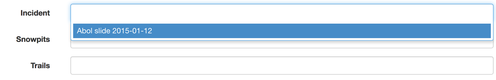

Baxter User Help¶
Contents:
Editing¶
Thanks for helping us build out or selection of data.
There may be a lot of fields, but we are trying to have it each has a specific use. If you have some data that you believe we should be tracking, but there is currently not a field for please get in touch and we can discuss it. Also you could submit an issue.
Much of the admin interface is set up to be easy to use, and we are working on adding more help information for less obvious fields.
For geospatial data there are maps where you can create lines, points, and polygons depending on what that specific field needs. We are looking at direct geospatial data upload in the future, but right now database access is also avaliable.
User Accounts¶
Right now it is not possible to change your password via the website. The horrific one given to you is what you get. Password changes and the ability to modify your own account is coming.
Database Access¶
If you have geospatial data in ArcGIS or QGIS and you wish to connect to the database and edit directly, please be in touch, and we will set you up with an account. Database accounts are seperate than accounts for the admin. The site is running a PostGIS database on port 5432.
Setup:
Markdown¶
In places which will generate longer text blurbs, like the description of an Avalanche Incident, can be formatted as Markdown.
Markdown is a more human readable, and natural way of formatting text compared to writing html.
Paragraphs¶
Paragraphs are followed by blank lines. Consecutive lines without a blank line become the same paragraph.
Headings¶
Headings are designated by some number of # symbols before a line of text. The more # symbols the less important the heading is.
# Large Heading
## Secondary Heading
##### Much smaller heading
Which will become
<h1>Large Heading</h1>
<h2>Secondary Heading</h2>
<h5>Much smaller heading</h5>
Links¶
Links are very easily formatted in Markdown. Just insert [link text](link url) into the description. Example:
[National Avalanche Center](http://www.fsavalanche.org)
Will be formatted into:
<a href="http://www.fsavalanche.org">National Avalanche Center</a>
And displayed as National Avalanche Center
Lists¶
For a basic unordered (bulleted) list, make sure you lead with a blank line, then use either a * or a - per item.
* Item
* Item
* Item
Generates an HTML list:
<ul>
<li>Item</li>
<li>Item</li>
<li>Item</li>
</ul>
Which will form:
- Item
- Item
- Item
Images¶
Images uploaded via the admin will be in /static/uploaded/photos/. To get the path of an image, check Admin/Photos list for the path.

If you are in the in the process of uploading images within an Avalanche Incident or other location, then you’ll need to finish up and save before the image is uploaded to the server, and the path becomes visible.
To insert an image into the markdown type .
For example:

Gets turned into this code which will nicely render an image:
<img src="/static/uploaded/photos/IMG_2774.jpg" alt="Photo of Devil's Den" class="img-responsive">
Currently images are only setup to be displayed at full size, but they will scale down to fit the containing object they are in.
Data Types¶
There are several other different types of data accessible, but not everything currently effects editing or what the public can see.
Currently hidden data types include:
- Weather Observations
- Weather Forecasts
- Points of Interest
- Avalanche Problems
- Snowpits
Several of the data types will allow you to add related data. There will be an add button, and you can add several. Click the X to remove the connection.
{kind=link}
On related data, where it may be related to several different things, you may have to edit the individual photo or snowpit and select the data in the drop down menu as it cannot be selected in the inline editor.
{kind=link}
Avalanche Incidents¶
Fields:
Observer
Path
Name
Display
Observation Date
Occurence Date
Location
Elevation
Aspect
Trigger
Trigger Additional Information
Avalanche Problem
Weak Layer
Size - Relative to Path
Size - Destructive Force
Depth
Width
Vertical
Slope Angle
- Number of People Involved
- Caught
- Carried
- Injuried
- Partly Buried
- Fully Buried
- Killed
- Rescuers
Group Activity
Group Travel
Snow Profile
Image
Description
Summary
- Geospatial
- Crown
- Bed Surface
- Debris Field
Problems
Involved¶
If information is avaliable for each person involved in a slide, their contact info can be recorded, how they were involved, and what location/s they were at.
{kind=link}
Trails¶
Fields:
- Geom
- Use Type
- Tid
- Skitrail
- Name
- Length Mi
- Status
- Display
- Pub Share
- Gpsupdate
- Gpsunit
- Gpsuser
- Bspaid
- Tsid
- Display Wu
- Display Wn
- Ttype
- Season
- Shape Leng
- Tclass
- Maintclass
- Slength
- Min Slope
- Max Slope
- Avg Slope
- Length Ft
- Description
- Photos
Users¶
Users are not really a data type in and of themselves, they are for site management purposes. Most people will not even see this selection.
Observers¶
Not all users are designated observers by the park. Those who are can be selected in Avalanche Incidents and several other places as being the source of data.
Roles¶
There are different levels of roles avaliable on the site. Currently there is not many differences between them, other than being able to manage other users, but contributors cannot delete information.
- Admin
In addition from being able to add, edit, and delete data from the site, Admins can also manage Users.
- User
Can add, edit, and delete information on the site
- Contributor
Can add and edit information in the site